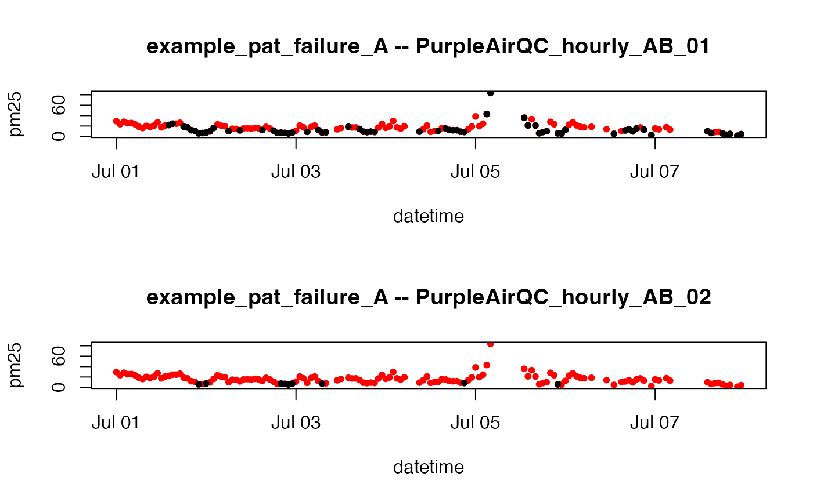

R/PurpleAirQC_hourly_AB_03.R
PurpleAirQC_hourly_AB_03.RdCreates a pm25 timeseries by averaging aggregated data from the A and B channels and applying the following QC logic:
Create pm25 by averaging the A and B channel aggregation means
Invalidate data where: (min_count < 20)
Invalidate data where: (A/B hourly difference > 5 AND A/B hourly percent difference > 70%)
Invalidate data where: (A/B hourly data recovery < 90%)
PurpleAirQC_hourly_AB_03(pat = NULL, min_count = 20, returnAllColumns = FALSE)A PurpleAir timeseries object.
Aggregation bins with fewer than min_count measurements
will be marked as NA.
Logical specifying whether to return all columns
of statistical data generated for QC algorithm or just the final pm25
result.
Data frame with columns datetime and pm25.
Purple Air II sensors reporting after the June, 2019 firmware
upgrade report data every 2 minutes or 30 measurements per hour. The default
setting of min_count = 20 is equivalent to a required data recovery
rate of 67%.
# \donttest{
library(AirSensor)
df_00 <-
example_pat %>%
pat_qc() %>%
PurpleAirQC_hourly_AB_00()
df_01 <-
example_pat %>%
pat_qc() %>%
PurpleAirQC_hourly_AB_01()
df_02 <-
example_pat %>%
pat_qc() %>%
PurpleAirQC_hourly_AB_02()
layout(matrix(seq(2)))
plot(df_00, pch = 16, cex = 0.8, col = "red")
points(df_01, pch = 16, cex = 0.8, col = "black")
title("example_pat_failure_A -- PurpleAirQC_hourly_AB_01")
plot(df_00, pch = 16, cex = 0.8, col = "red")
points(df_02, pch = 16, cex = 0.8, col = "black")
title("example_pat_failure_A -- PurpleAirQC_hourly_AB_02")

layout(1)
# }